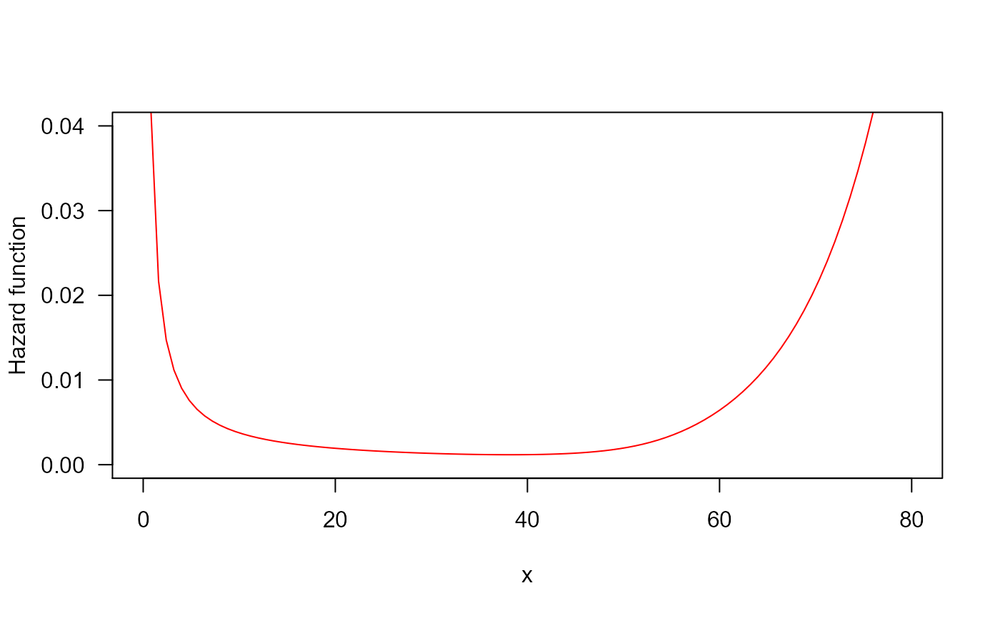

R/initValuesOW_TTT.R
initValuesOW_TTT.RdThis function can be used so as to get suggestions about initial values
and the search region for parameter estimation in OW distribution.
initValuesOW_TTT( formula, data = NULL, local_reg = loess.options(), interpolation = interp.options(), ... )
| formula | an object of class |
|---|---|
| data | an optional data frame containing the response variables. If
data is not specified, the variables are taken from the
environment from which |
| local_reg | a list of control parameters for LOESS. See
|
| interpolation | a list of control parameters for interpolation function. See
|
| ... | further arguments passed to
|
This function performs a non-parametric estimation of the empirical total time on test (TTT) plot. Then, this estimated curve can be used so as to get suggestions about initial values and the search region for parameters based on hazard shape associated to the shape of empirical TTT plot.
# Example 1 # Bathtuh hazard and its corresponding TTT plot y <- rOW(n=50, mu=0.022, sigma=8, nu=0.01) require(RelDists) my_initial_guess <- initValuesOW_TTT(formula=y~1) curve(hOW(x, mu=0.022, sigma=8, nu=0.01), from=0, to=80, ylim=c(0, 0.04), col="red", ylab="Hazard function", las=1)